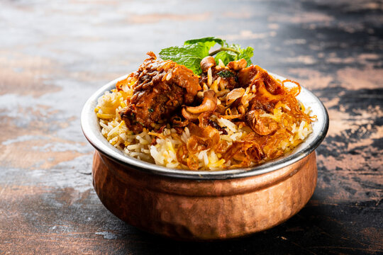

Biriyani

Description
biriyani is a mixed rice dish originating in South Asia, traditionally made with rice, meat (chicken, goat, beef), seafood (prawns or fish), or vegetables, and spices. It was present in Mughal-era India, though the precise date and place of origin are debated. It is thought to derive from a Persian rice dish, either pilau or birinj biryan.
The dish makes use of slow-cooking as in Persian pilau, combined with Persian-style yoghurt-marinated meat and a spicy Indian style of cooking; it was likely developed in the Mughal court kitchens.
It is also possible that biriyani was brought to South India before the Mughal era, or that pilau was brought to India and biriyani was developed from it before being adopted by the Mughals.
biriyani is one of the most popular dishes in South Asia and among the South Asian diaspora. The dish is often associated with the region's Muslim population in particular,[4] but is nevertheless a mainstream culinary staple embraced by every demographic. Similar dishes are prepared in many other countries, often with local variations, and often brought there by South Asian diaspora populations. biriyani is the most-ordered dish on Indian online food ordering and delivery services, is used in weddings and celebrations throughout the region, and has been described as the most popular dish in India.
Ingredients
- The Protein/Base: 750g-1kg of chicken (bone-in), mutton, beef, prawns, or mixed vegetables.
- The Rice: 2-3 cups of aged Basmati rice.
- Aromatics & Spices: Sliced onions, ginger-garlic paste, green chilies, mint leaves, and coriander leaves.
- Whole Spices: Bay leaves, cinnamon sticks, green/black cardamom pods, cloves, star anise, and cumin seeds (or shah jeera).
- Spice Powders: Turmeric, red chili powder, coriander powder, cumin powder, and garam masala or biriyani masala.
- Fats & Dairy: Ghee (clarified butter), vegetable oil, and thick, plain yogurt (curd).
- Finishing Touches: Saffron soaked in warm milk (for color and aroma) and fried onions (known as birista).
Preparation
Step 1: Marinate the Chicken
- In a large bowl, combine the yogurt, ginger-garlic paste, chili powder, turmeric, biriyani masala, and salt.
- Add the chicken pieces, fresh herbs, and half of your fried onions. Mix well so every piece is coated.
- Cover and let it marinate in the refrigerator for at least 1 hour (or overnight for best results).
Step 2: Cook the Chicken (The Masala)
- Heat ghee in a large, heavy-bottomed pot (or Dutch oven) over medium heat.
- Add the marinated chicken and cook for 10-15 minutes until the chicken is mostly cooked through and a thick, rich gravy forms.
- Remove from heat and set aside.
Step 3: Parboil the Rice
- Wash the basmati rice in cold water until it runs clear, then soak it for 30 minutes.
- In a separate large pot, bring plenty of water to a rolling boil. Add your whole spices, oil, and salt.
- Drain the soaked rice and add it to the boiling water.
- Cook the rice until it is 70-75% cooked (it should have a slight bite in the center, about 5–7 minutes). Drain the water completely.
Step 4: Layer the biriyani
- At the bottom of a heavy-bottomed pot, drizzle a tablespoon of ghee.
- Add a layer of the cooked chicken masala.
- Cover the chicken with a layer of the parboiled rice.
- Sprinkle a handful of fried onions, fresh mint, and coriander.
- Repeat the layers, finishing with a final layer of rice on top.
- Pour the saffron-infused milk and remaining ghee evenly over the top layer of rice.
Step 5: The "Dum" (Steaming)
- Cover the pot with a tight-fitting lid. To trap the steam completely, you can roll out a piece of dough (flour and water) and press it around the rim to seal the lid, or use a layer of heavy-duty aluminum foil.
- Place a flat tawa (or flat cast-iron skillet) under your biriyani pot. This prevents the bottom from burning.
- Cook on high heat for 5-8 minutes, then reduce the flame to the lowest setting and let it steam for another 15-20 minutes.
- Turn off the heat and let the pot rest untouched for 10-15 minutes to allow the flavors to meld and the rice grains to fluff up.
Home